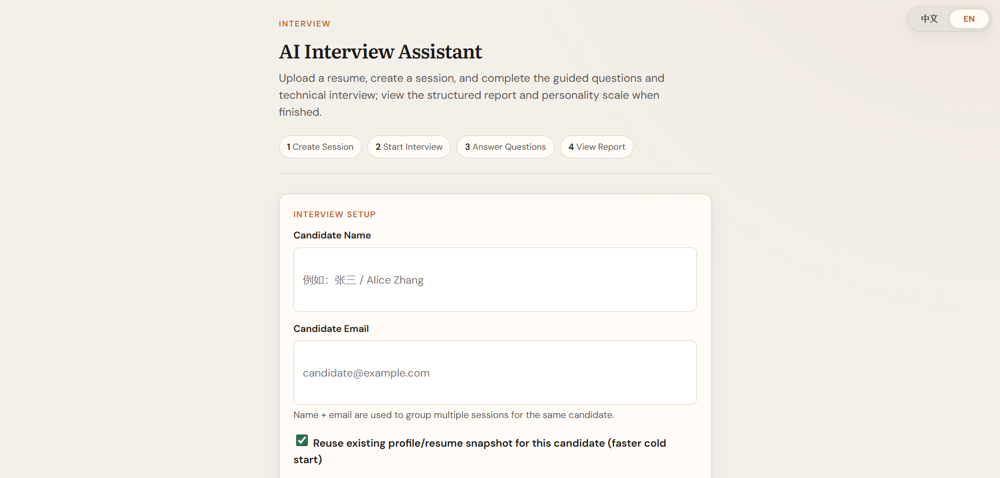
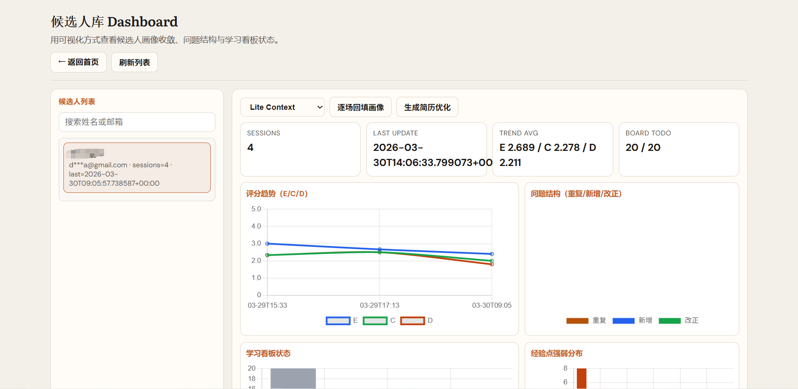
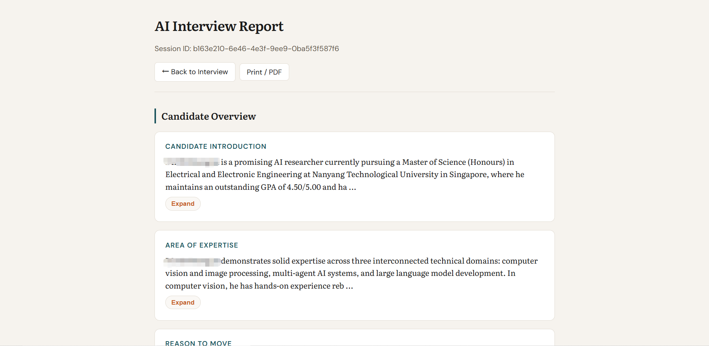

项目¶
研究项目¶
RGB-to-RAW 图像重建¶
类型：研究项目 | 时间：Huawei Singapore Research Center
重建基于 Unprocessing 的逆 ISP 管道，设计轻量级 ReRAW 风格模型。
关键成果：
- PSNR：52.81 → 56.98 ⬆️
- SSIM：0.91 → 0.95 ⬆️
- 开发多线程 RAW 分布间隙分析器
- 构建降级基准测试展示高保真 RAW 的优势
技术栈：Python, PyTorch, 图像处理, Inverse ISP, RAW 图像处理
Vision-Language-Action (VLA) / RAW-to-Action¶
类型：研究项目 | 时间：Huawei Singapore Research Center
评估 SpatialVLA 并在 Bridge 数据集上进行微调，实现端到端 RAW-to-action 训练。
关键成果：
- 成功率：34.5% → 49.5% ⬆️
- 设计 RawAdaptationModule（可学习的通道投影）
- 将 4 通道 RAW 桥接至 RGB 预训练编码器
- 端到端性能：0.21 → 0.36 ⬆️
技术栈：Python, PyTorch, 具身智能, SpatialVLA, Domain Adaptation
LMCache on Ascend 910B¶
类型：研究项目 | 时间：Huawei Singapore Research Center
集成 CacheBlend 技术到 DeepResearch 推理管道，在华为 Ascend 910B 上实现高效 KV Cache 管理。
关键成果：
- KV hit rate 超越 vLLM prefix cache
- 优化 vLLM-Ascend 调度器
- 提升推理效率
技术栈：Python, vLLM, LMCache, Ascend 910B, KV Cache
AgentDriver - 自主驾驶 AI Agent¶
类型：研究项目 | 时间：Huawei Singapore Research Center
迁移完整自主驾驶栈到华为 Ascend 平台，集成大语言模型进行决策。
关键成果：
- 完整栈迁移到 Ascend 910B
- 集成 Qwen2.5-32B 作为主决策模型
- 通过 MindSpeed-LLM 微调 LLaMA2-7B
- 重新设计位置聚类索引的内存检索
- 优化 vLLM-Ascend 调度器
技术栈：Python, vLLM, Qwen, LLaMA, Ascend 910B, MindSpeed-LLM
开源项目¶
AI Interview Agent¶
类型：开源项目 | GitHub：GoDiao/ai-interview-agent | Stars: ⭐
一个智能面试助手系统，通过持久化候选人档案实现跨会话的成长追踪。

核心功能：
- 持久化候选人档案 - 每次面试自动更新候选人成长轨迹
- 智能问题追踪 - 自动标记新问题、重复问题、已解决问题
- 学习看板 - 可视化展示候选人需要改进的领域
- 趋势分析 - Dashboard展示分数趋势、问题分布、经验热力图

技术架构：
- 后端：FastAPI + Pydantic + 异步编排
- 前端：HTML/CSS/JS + Chart.js
- 存储：JSON分片存储架构
- LLM：OpenAI兼容API

关键特性：
- 显式状态机面试流程（intro → technical → personality → report）
- 候选人库按
name + email索引实现跨会话连续性 - 自动会后复盘（重复问题、新问题、已修复问题）
- 从原始Q&A回填档案，渐进式完善独立库档案
- 分片存储架构：将庞大的
candidate.json分解为可维护文件
项目链接：GitHub仓库
竞赛项目¶
LLM 20 Questions - Rethinking¶
类型：竞赛项目 | 时间：2025
构建 GRPO 训练环境，实现多智能体协作架构。
关键成果：
- 从零开始构建完整游戏环境交互循环
- 多智能体协作架构（Questioner/Answerer/Analyzer）
- 准确率：42% → 83% ⬆️
- 开发 RLAIF 奖励函数结合规则约束和 AI 反馈
技术栈：Python, GRPO, LLaMA, Multi-Agent, RLAIF
WSDM Cup - 多语言聊天机器人竞赛¶
类型：竞赛项目 | 排名：154/950 | 时间：Dec 2024 - Feb 2025
微调大语言模型进行多语言分类任务。
关键成果：
- 微调 Gemma2-9b-it 进行多语言分类
- 应用 LoRA 和 int4 量化实现高效部署
技术栈：Python, PyTorch, Gemma, LoRA, Quantization
技能总结¶
| 类别 | 内容 |
|---|---|
| 深度学习 | PyTorch, PEFT, MindSpeed-LLM |
| LLM 框架 | vLLM, LMCache, Qwen, LLaMA |
| 计算机视觉 | Inverse ISP, RAW Processing, SpatialVLA |
| AI 系统 | Agentic AI, Multi-Agent, RLAIF |
| 硬件平台 | Ascend 910B, GPU 优化 |
| 编程语言 | Python, SQL, TCL, JavaScript |